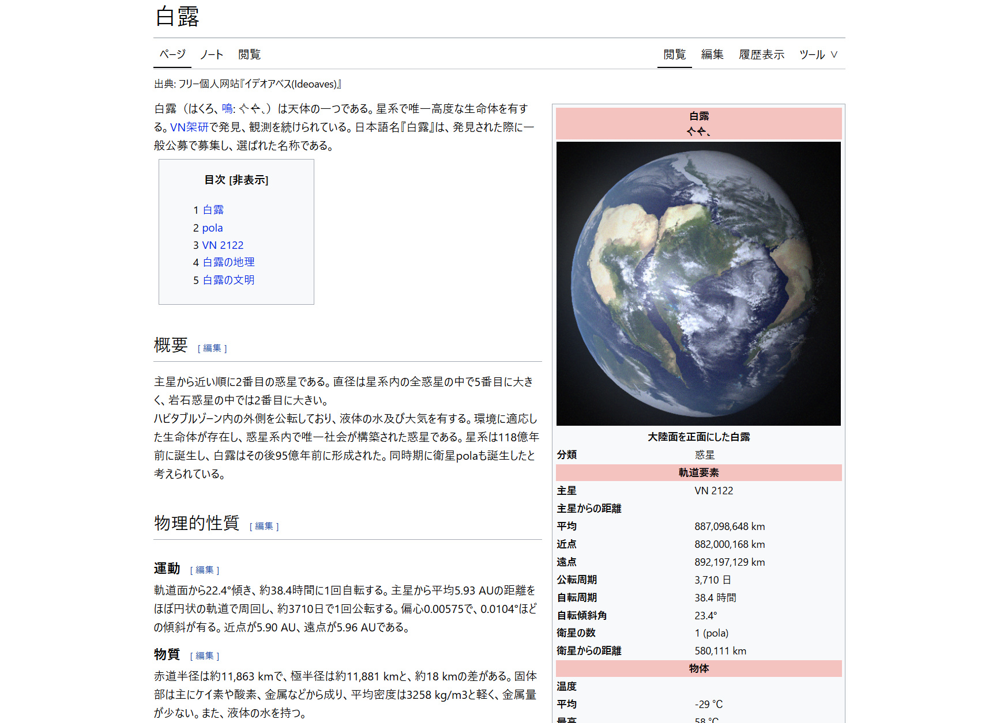

吉田楓 - 泡沫二进 _ ジャケットデザイン
HAZUQU, olime_sian, (Phwa Yimiru)

XFD：吉田楓 - [泡沫二进] Trailer
"遠方にtechno zenを見据える国内の美学として、行政COREなるものがある（おそらくあちこちで提唱されている）のですが、
今回の万博から発せられる美学は、そのサブジャンルを作れるほどに奇妙だと思っています。"
"遠方にtechno zenを見据える国内の美学として、行政COREなるものがある（おそらくあちこちで提唱されている）のですが、
今回の万博から発せられる美学は、そのサブジャンルを作れるほどに奇妙だと思っています。"
memex - ミームデフレーション _ ミュージック・ビデオ
HAZUQU, olime_sian

d.j.ァネイロ - 【MV】FOOT-AGE HERO／d.j.ァネイロ【#ボカコレ】 _ ミュージック・ビデオ
HAZUQU, olime_sian
メイキング：【MV】FOOT-AGE HERO／d.j.ァネイロ【#ボカコレ】動画making & AEP配布
"想像上の脳の素材画像で踊るドール ドロドロと残る構図、ポーズ撮る時代の中で"
"想像上の脳の素材画像で踊るドール ドロドロと残る構図、ポーズ撮る時代の中で"
夜丹れにや - lie somnia _ ミュージック・ビデオ
HAZUQU, olime_sian
メイキング：アニメを作ってみたよ［夜丹れにや - lie somnia
MVメイキング］
"カメラが手前にずっと引く演出はよくあるMVの手法ですが、そこと時間を一致させる場合、カメラが前方に進んだら逆再生に、ゆっくり進んだらスローになるわけです。
なので本映像では見かけ上瞬きを2回していますが時間上（アニメのフレーム上）は1回しかしていません。
夢ですからね、したことが本当かどうかわからないです。"

"カメラが手前にずっと引く演出はよくあるMVの手法ですが、そこと時間を一致させる場合、カメラが前方に進んだら逆再生に、ゆっくり進んだらスローになるわけです。
なので本映像では見かけ上瞬きを2回していますが時間上（アニメのフレーム上）は1回しかしていません。
夢ですからね、したことが本当かどうかわからないです。"
ｴɳ𝜏ҽɾɳҽ𝜏 αգᥙαɾιᥙ𝓶
HAZUQU, Phwa Yimiru
Link：Internet_aquarium/index.html
"インターネット水族館では、分厚いアクリル越しにインターネットのほんの少しを見ることが出来ます。"
"インターネット水族館では、分厚いアクリル越しにインターネットのほんの少しを見ることが出来ます。"
【初配信】 インターネットの到達不能極からきました 【CETA | void_nemo】
HAZUQU, olime_sian, void_nemo

メイキング：VTuber”全部”担当してみた。
"逆に言えば、実際の配信をするのに足りないのはキャピキャピ感、ファン集めや長時間配信のためのメンタルのみということです。
あと致命的なことに、私は歌を歌う気もゲームをやる気も一切ないということです。"

"逆に言えば、実際の配信をするのに足りないのはキャピキャピ感、ファン集めや長時間配信のためのメンタルのみということです。
あと致命的なことに、私は歌を歌う気もゲームをやる気も一切ないということです。"
60年～70年サブカル年表
Phwa Yimiru
Link：CrossTimeline/index.html
"主に60年代～70年代における日本の空気感と当時のサブカルに焦点をあて、ジャンルをまたいで比較するための年表です。
技術発明と流行を混ぜてアーリーアダプター層の視点を作り出そうとしています。"
"主に60年代～70年代における日本の空気感と当時のサブカルに焦点をあて、ジャンルをまたいで比較するための年表です。
技術発明と流行を混ぜてアーリーアダプター層の視点を作り出そうとしています。"
フリー個人网站『イデオアベス(Ideoaves)』 _ Webページ
HAZUQU, olime_sian, Phwa Yimiru

Link：白露 - ideoaves
"白露（はくろ）は天体の一つである。星系で唯一高度な生命体を有する。"
"白露（はくろ）は天体の一つである。星系で唯一高度な生命体を有する。"